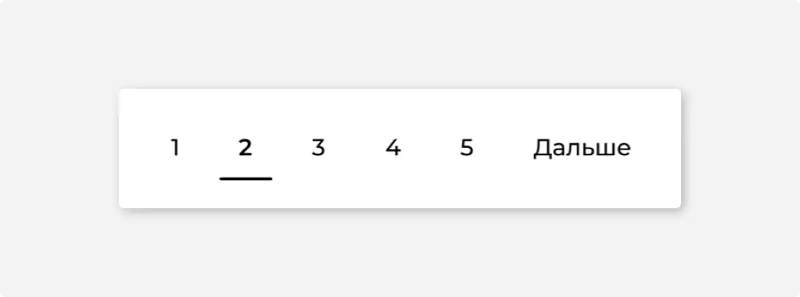
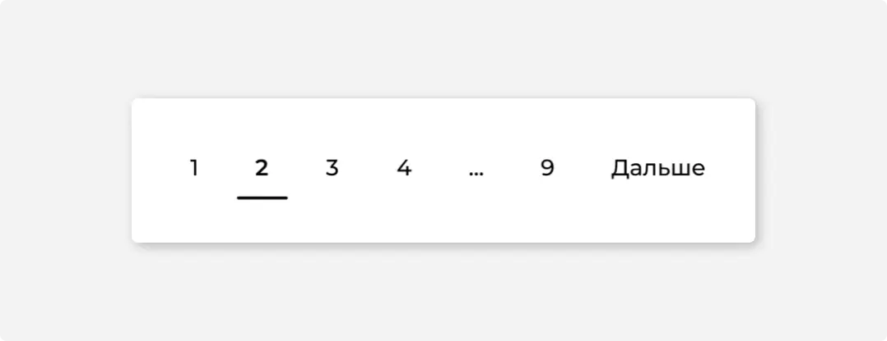

#1
Назначение
Постраничная навигация (пейджинг или пагинация) — способ представления большого количества однородной информации, когда контент разбивается на страницы.
#2
Описание работы
Размер страницы нужно подбирать таким образом, чтобы она была не слишком большой, но и не слишком маленькой. Оптимально, когда страница по размеру как 2-3 экрана пользователя.
Если страниц 7 и меньше, то показываются ссылки сразу на все 7 страниц. Если больше 7 страниц, показывается ссылка на последнюю страницу после многоточия
Слева и справа от текущей присутствуют ссылки на 2 соседние страницы. Чтобы пользователь мог перемещаться через одну. Плюс ссылки на первую и последние страницы.
Если новые записи добавляются в начало выборки очень быстро, рекомендуется «замораживать» постраничную навигацию: появление новых записей никак не влияет на пейджинг, до тех пор пока пользователь не обновит страницу, или не кликнет по кнопке «Дальше».
#3
Оформление
Визуальное оформление пагинации основано на элементе Вкладки. Размер, расположение и описание состояний соответствуют группе вкладок.